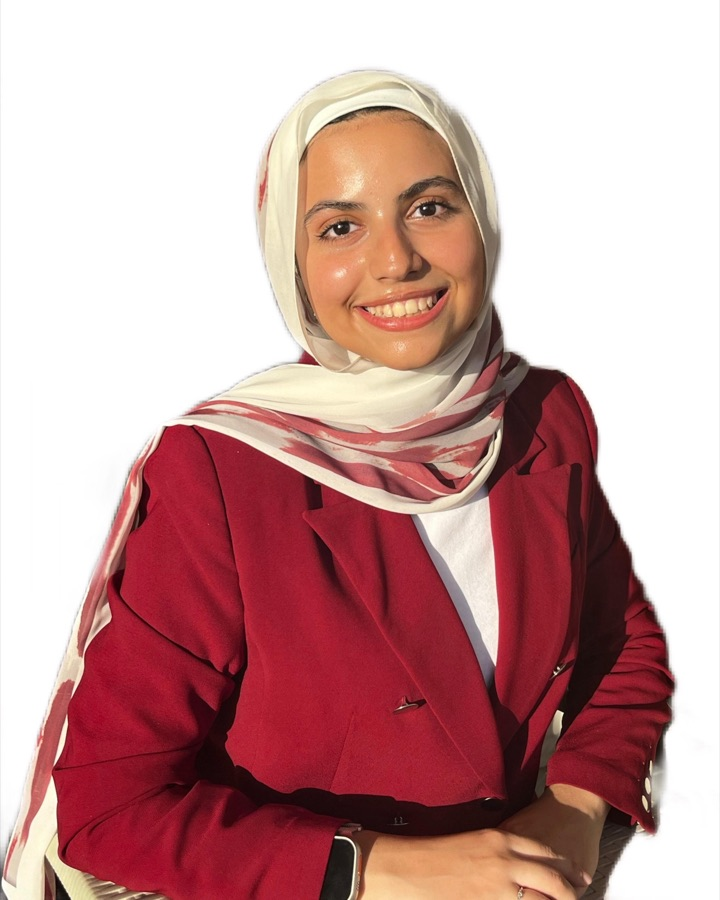

Data Engineering & ETL
Python & SSIS pipelines, real-time ingestion, Parquet, Docker and AWS deployments.
I'm a Data Analytics Engineer
I own the full data lifecycle: building ingestion pipelines, modelling schemas, and turning the results into dashboards and predictive models that drive real decisions.

I'm a Data Analytics Engineer who works across the whole pipeline, from Python ETL and SQL data modelling to Power BI dashboards and machine-learning models. I've done this in a startup (Revelio), on a large-scale streaming platform (STC TV), and in research and teaching roles.
Today I teach as well: I'm a Teaching Assistant for the Data Science major at Pharos University and a Data Analysis Instructor at EraaSoft, where I've mentored cohorts through end-to-end capstone projects.
People know me for discipline, on-time delivery and clear communication. Whether you need a data pipeline, a data warehouse, an interactive dashboard or a forecasting model, I build solutions around your actual business goals.
End-to-end data work, from the first raw file to the final decision.
Python & SSIS pipelines, real-time ingestion, Parquet, Docker and AWS deployments.
Star schemas, data marts and ERDs on SQL Server, PostgreSQL and MySQL, built for fast queries.
Interactive Power BI (DAX, M), Tableau and Excel dashboards with clear data storytelling.
Time-series forecasting, recommendation engines, clustering and deep-learning models.
Engineering, analytics and teaching roles, most recent first.
The languages, platforms and libraries I use day to day.
Data engineering, machine learning and dashboards. Click a screenshot to enlarge it.
Graduation project. A full data pipeline with Python ingestion, PostgreSQL (Supabase) relational schemas for match, player and event data, and Dockerized services on AWS that power real-time dashboards.
Designed and implemented a star-schema data warehouse, populated by an SSIS ETL package that moves data from the OLTP database into the DWH.
Engagement analysis of 11,500+ users, viewership forecasting with 94% accuracy, and a content-based recommendation engine.
Studied how climate affects crop yield using clustering and feature-importance analysis, with the findings presented in a Power BI report.
Tracks 874M in benefit against 412M in cost, with completion by project type, cost by department and status across quarters.
A three-page report on data professionals' roles, career switches, education levels and how hard they find breaking into data.
Revenue of 1.35M across categories and countries, with quarterly order trends, monthly revenue and supplier roles.
811 campaigns across 6 channels (Jan 2024 – Jun 2025): spend vs. revenue, ROAS, ROI, CPA and conversion rate by channel for a digital-marketing agency.
Two linked dashboards covering 4.3B in sales: top cities, revenue vs. discount correlation, allergy categories and top products.
Star-rating distribution, publication trends, top-reviewed books and author popularity across 11.8K books.
21M in annual sales broken down by month, channel, age group, gender, order status and top 10 states.
An interactive dashboard tracking student attendance, grade distribution and course-completion rates.
A strong academic base plus industry training programs.
Have a project, a role or a question? Send a message and I'll get back to you.